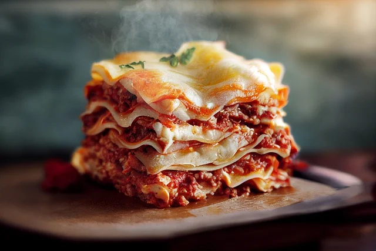

Home - Recipes
Lasagna - Lasanha

Description - Descrição
A lasanha é um prato clássico da culinária italiana, composto por camadas de massa
intercaladas com recheios variados, como carne moída, molho de tomate, queijo e molho bechamel.
É assada no forno até que o queijo esteja derretido e dourado,
resultando em uma refeição reconfortante e deliciosa.
Ingredients - Ingredientes
- 500g Massa para lasanha (pré-cozida)
- 1 cebola picada
- 2 dentes de alho picados
- 5 saches de Molho
- 1kg Carne Moída
- 300g Queijo Mussarela
- 300g Presunto
- 50g Queijo ralado
- Sal, pimenta e orégano a gosto
Steps - Passos
- Em uma panela grande, aqueça um pouco de azeite e refogue a cebola e o alho até ficarem dourados.
- Acrescente a carne moída e cozinhe até que esteja bem dourada.
- Adicione as latas de molho de tomate, tempere com sal, pimenta e orégano a gosto. Deixe cozinhar em fogo baixo por cerca de 20 minutos, mexendo ocasionalmente.
- Em um refratário, espalhe uma camada fina de molho à bolonhesa no fundo.
- Coloque uma camada de massa de lasanha sobre o molho.
- Adicione uma camada de presunto e, em seguida, uma camada de queijo mussarela.
- Repita as camadas de molho, massa, presunto e queijo até que todos os ingredientes sejam utilizados, terminando com uma camada de molho e queijo mussarela.
- Cubra o refratário com papel alumínio e asse por 20 minutos. Depois, retire o papel alumínio e asse por mais 10 minutos ou até que o queijo esteja dourado e borbulhante.